Overview
Clueline is designed for mystery writers, particularly pantsers who discover their stories as they write.
It combines a familiar word-processing experience with tools for marking clues, red herrings and reveals. Writers can check their stories whenever they choose, whether during drafting or revision, to catch inconsistencies like premature reveals or characters appearing in two places at once.
We designed Clueline in under a week for the SVSD Storytelling Competition, which challenged teams to choose a specific audience and create a product they’d love, centered on storytelling. We explored several approaches before developing our concept and presenting the prototype through a video submission.
My Role
I worked alongside Chavi Sharma and Kelly Ramos Pereira as a co-designer, with most product decisions made collaboratively. I focused on the experience design and information architecture, shaping how writers navigate between the manuscript, the Story map and the Reader’s view. Kelly developed the visual identity and interface polish, while Chavi built the prototype screens in Claude Design.
The Problem
A mystery is two stories at once. One is what actually happened in the fictional world, including who committed the crime, how and why. The other is how those events unfold for the reader, including what they discover, what they suspect and when they learn the truth.
The challenge is keeping both consistent as a change to one can unintentionally unravel the other.
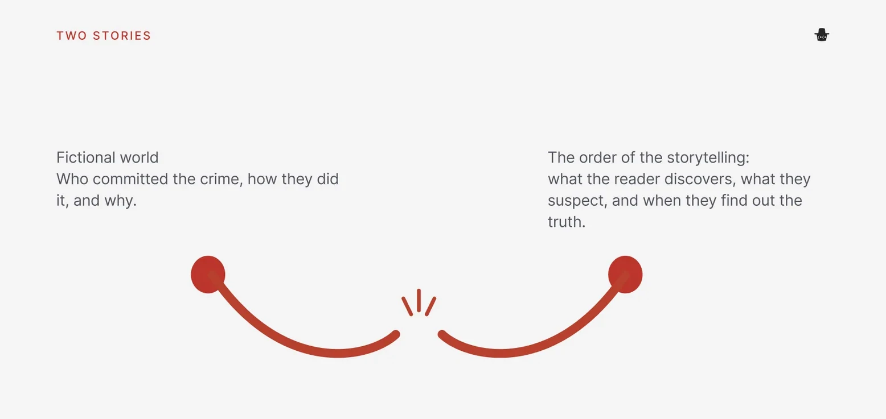
Writers and readers describe the same failures from opposite sides.
| Writers | Readers |
|---|---|
| Events and timelines become inconsistent during revisions. | The chronology becomes confusing or contradictory. |
| Characters know things they haven’t yet discovered. | A detective seems to know something the reader was never shown. |
| Clues and reveals shift as scenes move. | A reveal feels premature, unfair or unsupported. |
| Keeping track requires notes, outlines and repeated read-throughs. | Unresolved details weaken the mystery. |
Mystery author Elizabeth Spann Craig describes how easily chronology errors slip through ordinary editing, while author Andrew Welsh-Huggins has written about avoiding continuity mistakes in fiction.
Writers who outline have a plan to check against, while pantsers develop their plots through the manuscript itself, an approach favored by 64% of respondents in an informal Australian Writers’ Centre poll.
For these writers, keeping track of the story often means reconstructing connections from what they’ve already written.
Writers track all of this with tools like Scrivener and murder-mystery spreadsheets, which hold the information without checking it.
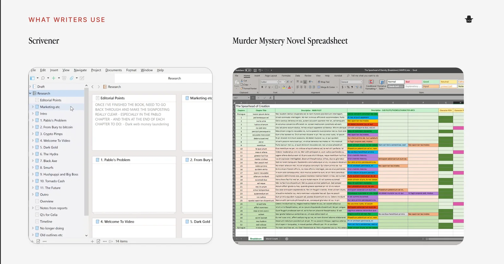
We compared five writing tools to understand how they help authors manage story structure and continuity.
| Tool | What we found |
|---|---|
| Scrivener | Organizes manuscripts, notes and research |
| Plottr | Helps writers plan plots and timelines |
| Campfire | Supports worldbuilding and story organization |
| Novelcrafter | Provides story planning and contextual tools |
| Aeon Timeline | Can flag contradictions against relationships and constraints configured by the writer |
Across the tools we reviewed, we saw an opportunity to make continuity checking part of the writing experience without requiring writers to build a detailed story structure beforehand.
Our opportunity was to help writers keep their mysteries consistent without taking away the freedom to discover the story as they go.
The Concept
Clueline is built on one idea. A system can check what the text says, but it can only guess what a reader will infer, so Clueline checks order, timing and who knows what, and leaves the question of whether the mystery works to the writer.
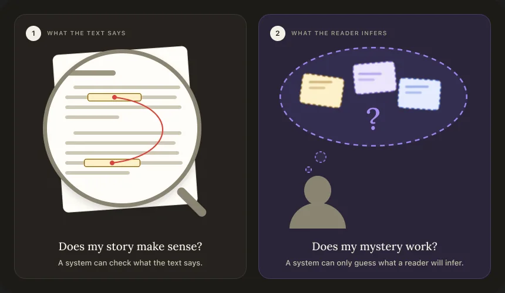
How Clueline works:
- The writer marks passages as a clue, a red herring or a reveal, and the marks are grouped by the secret they build toward, such as “Who stole the necklace?”
- When the writer asks for a check, Clueline compares the marks and events with the text.
- It lists what might not hold together and the writer decides what to do. Nothing writes the story for the author.
Experience Design
- 01 · Writing Flow Write Draft the story and mark clues, red herrings and reveals, with nothing interrupting until the writer asks for a check.
- 02 · Story Connections Story map The book, chapter by chapter, above what really happened in time order, with strings between them.
- 03 · Reader Perspective Reader’s view What the reader has been told so far, what is new in the chapter and how many secrets are still hidden.
- Switch views from the top bar
- A check runs when the writer asks
- The bottom bar counts what is left to check
01. Writing Flow
How might we let writers investigate their story without interrupting their creative flow?
Our first exploration put warnings inside the draft as the writer typed. The insight was that while a story is still changing, warnings appear too early and interrupt, so in the next exploration the writer decides when to create and when to step back and review.
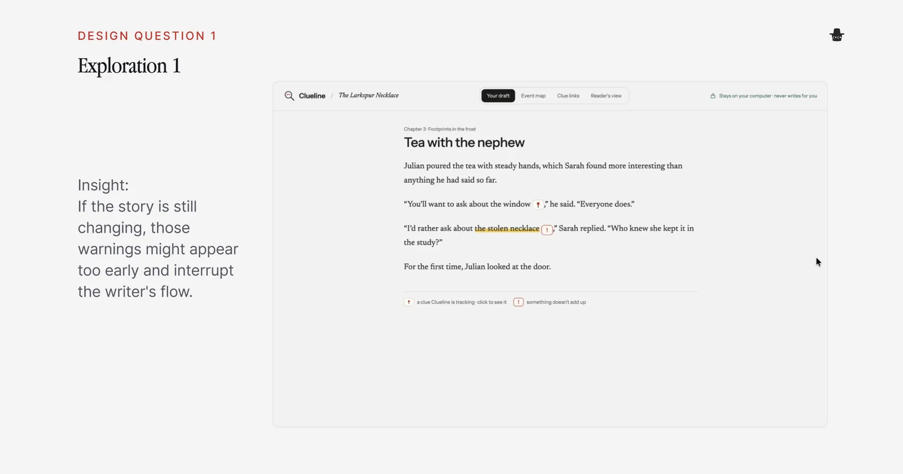
Clueline stays quiet while the writer drafts. Marking a passage takes one click from the toolbar, a check runs when the writer asks, and the bar at the bottom shows how many things are left to check.
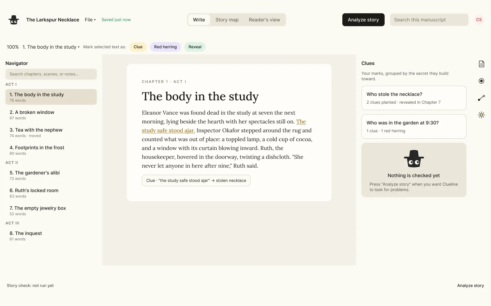
02. Story Connections
How might we make the relationships between clues, characters and events easy to understand?
We tried three versions. The first put a timeline beneath the editor, and the open question was what a writer most needs to see at that moment. The second organized the timeline by character, which showed more but still left the pieces unconnected. The third was the Story map, where every clue, event, character and reveal is connected.
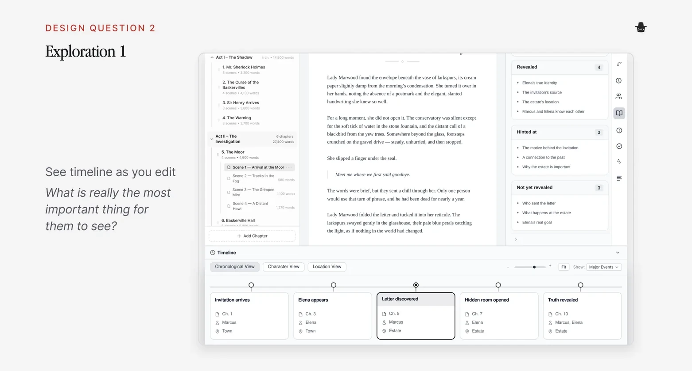
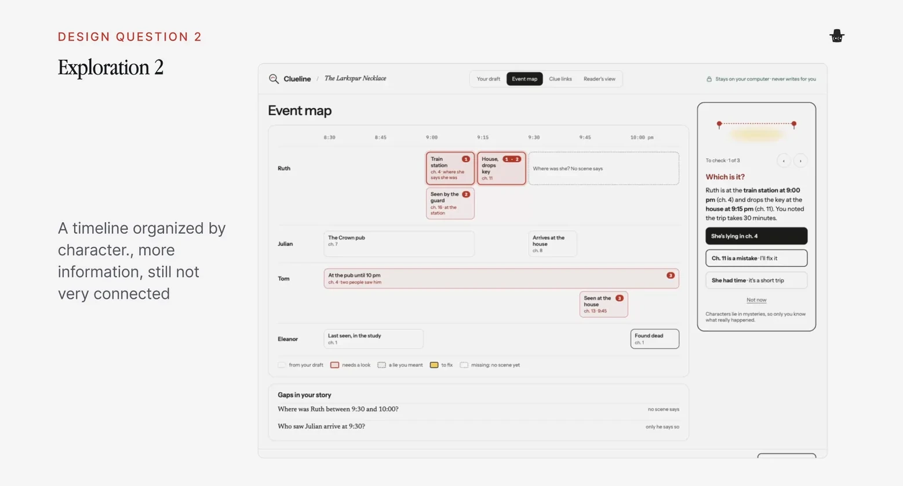
The map puts both stories on one screen. The top row is the book, chapter by chapter, with marks as colored dots, and the bottom row is what really happened in time order, with strings running between them. A red dashed string means a clue comes after its reveal. Selecting an event shows when, where and who, explains what’s wrong in plain words and shows what a fix would change, such as moving the time to 10:00 pm so Sarah can make it.
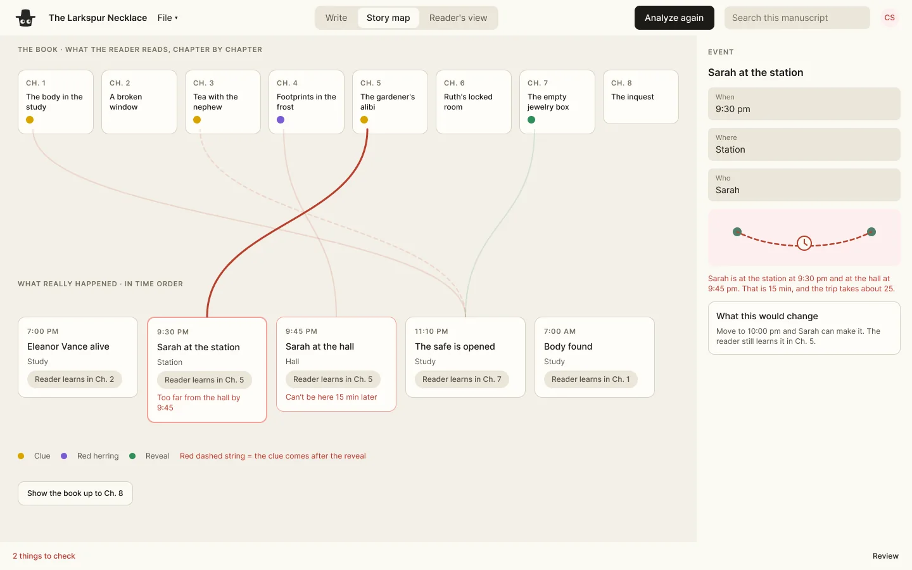
03. Reader Perspective
Can writers see their story through the reader’s eyes?
We first explored charts of which suspects readers might suspect at different points in the story, and moved away from them because a chart of suspicion is a guess.
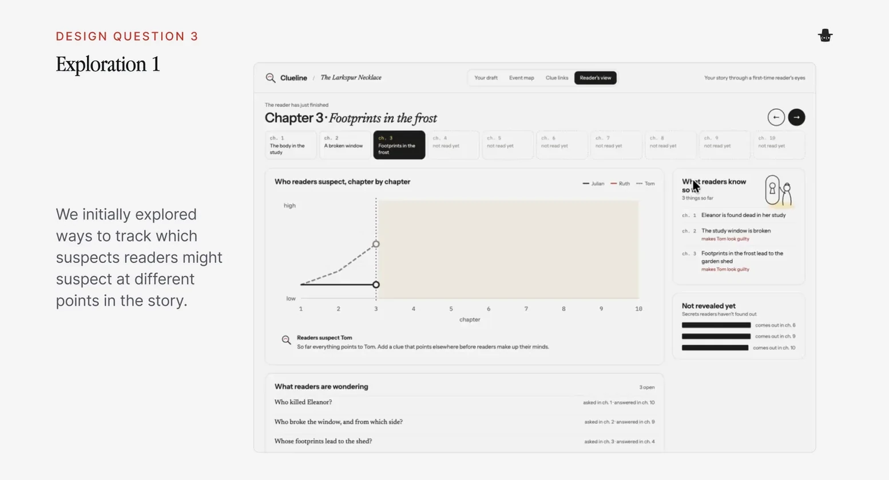
The second exploration goes chapter by chapter and lists what the reader has been told so far, flags what’s new in that chapter and shows how many secrets are still hidden. Writers see what the page shows and decide what the reader will make of it.
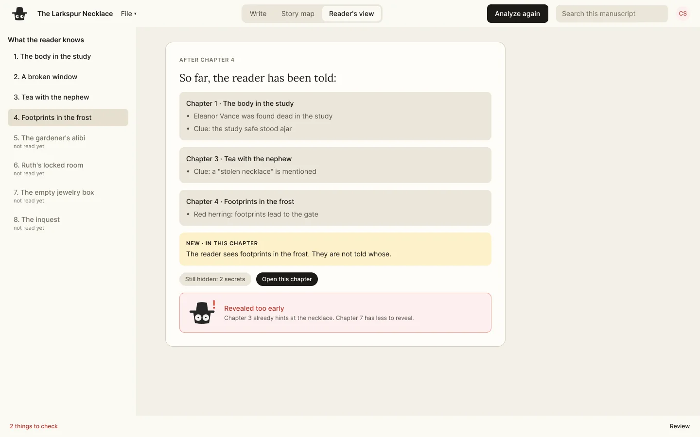
Visual Design
The central design tension was making a complex investigation tool feel familiar enough to write in. We wanted the manuscript to remain the focus, with the investigative features available when needed rather than competing for attention.
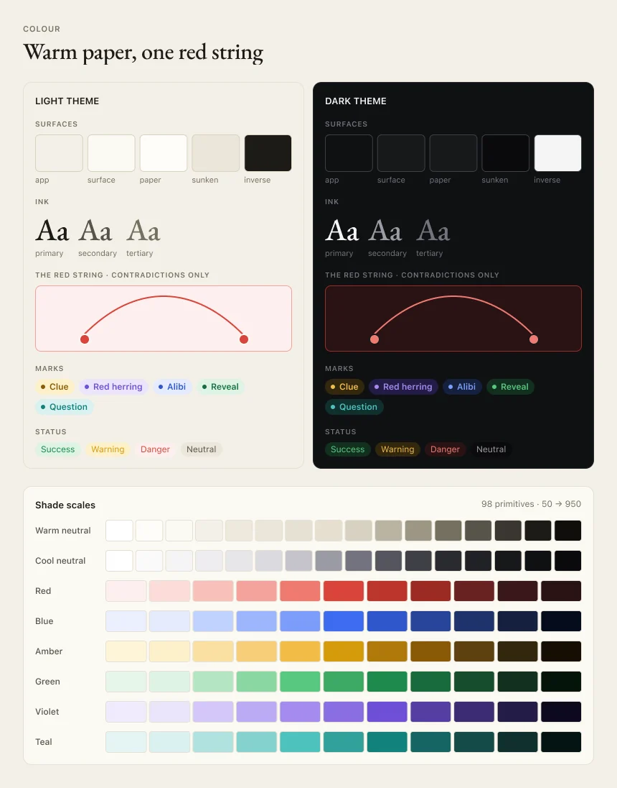
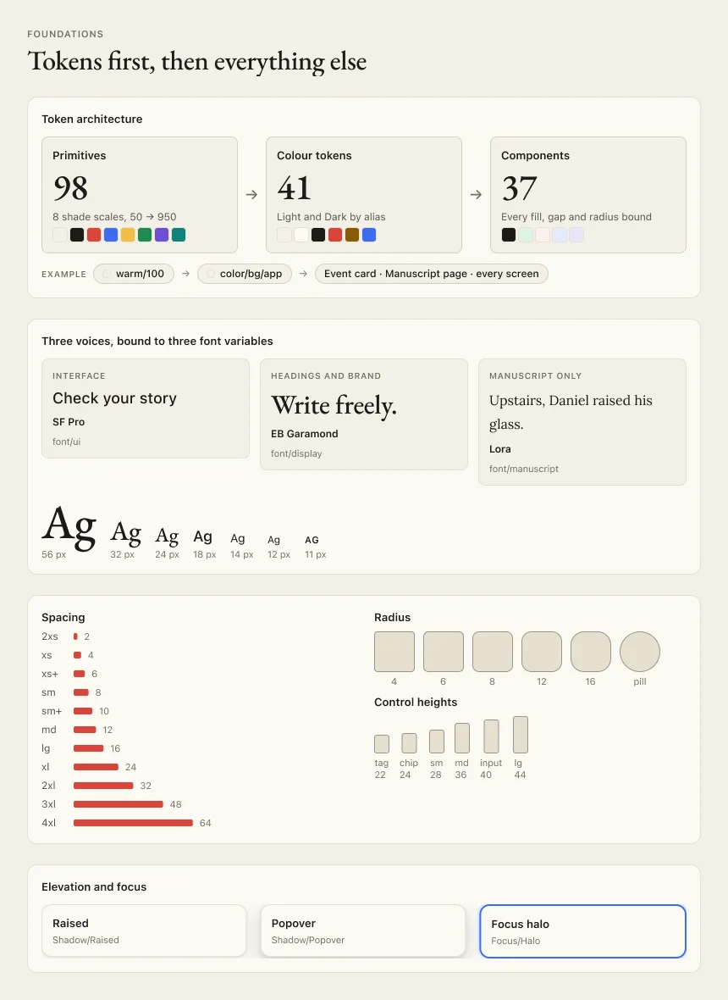
Kelly carried the detective theme into the visual identity through the string connecting evidence on an investigation board. Four string states communicate whether a connection holds, needs attention, has broken or has been repaired.
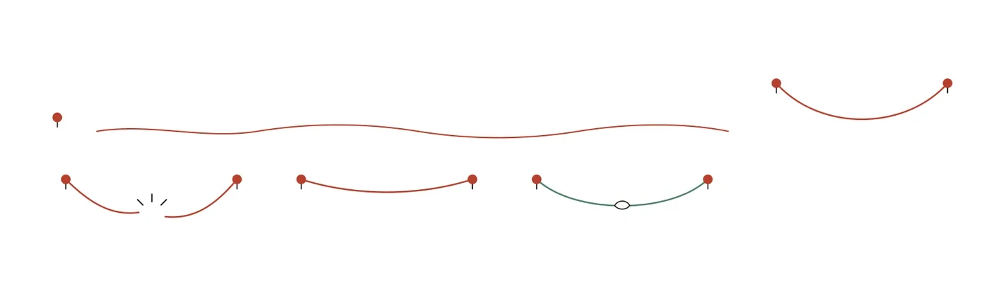
The detective mascot has its own set of expressions, with eyes that move from curious to suspicious to alarmed, and it appears in the top bar and in empty states.
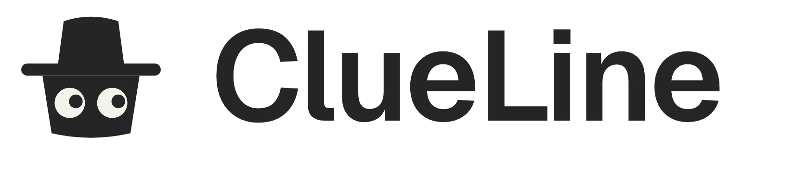
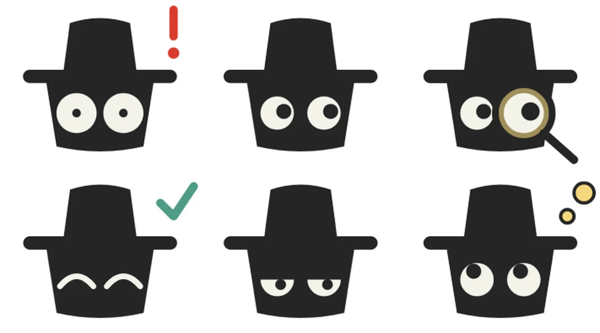
Outcome
We submitted a video that opened with The Last Toast, a short film illustrating how plot inconsistencies can undermine a mystery. From there, we introduced the problem, walked through our design process and demonstrated Clueline using a fictional mystery, The Larkspur Necklace.
The prototype used predefined clues and events to show how writers could investigate story connections and review the reader’s perspective. While it demonstrated the intended experience, we hadn’t yet tested it with a full-length manuscript. You can try the prototype.
What I Learned
This was my first design competition, and we had roughly a week to turn an open-ended brief into a working concept. Building Clueline meant exploring ideas quickly, questioning what we initially thought would work and being willing to change direction. We moved away from features like constant warnings and suspicion charts when we realized they could interrupt writers or make assumptions about their readers.
But what stayed with me most was the community. Coming from a Computer Science background, I’m usually surrounded by people who build software, so being in a space full of designers and creatives was a different experience. Between the workshops, portfolio conversations, Discord discussions and office hours with Naheel, I got to see how students from different design backgrounds approached problems, presented their work and challenged each other’s thinking.
It was my first time being part of that kind of design community, and I enjoyed it just as much as the competition itself.
If I continued developing Clueline, I’d want to test it with mystery writers using real manuscripts to see which connections they find useful, where the system mistakes intentional misdirection for an error and whether its findings actually help during revision.